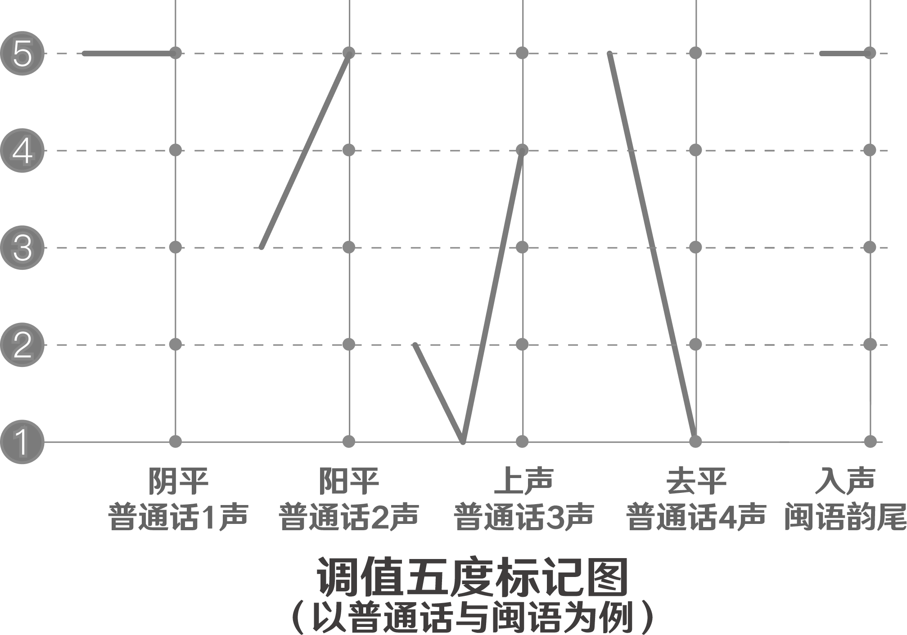

五度标记法（five level tone mark），即五度制调值标记法，是赵元任1920年代发明的一种记录语言调值的方法。其把相对音高高度用数字表示，各种汉语语言的记录，以1代表最低，以2代表次低，以3代表中，以4代表次高，以5代表最高。
现代方言的调类均可分析为分化自中古汉语的四声，不过不同方言间的同源调类的调值往往差异很大。例如，官话中，阳上和阳去合流，后来阴去也与它们合流，这样一来就只剩下6个声调。后来入声的韵尾消失，入声便合流到其他调类中，只剩下4个声调。
